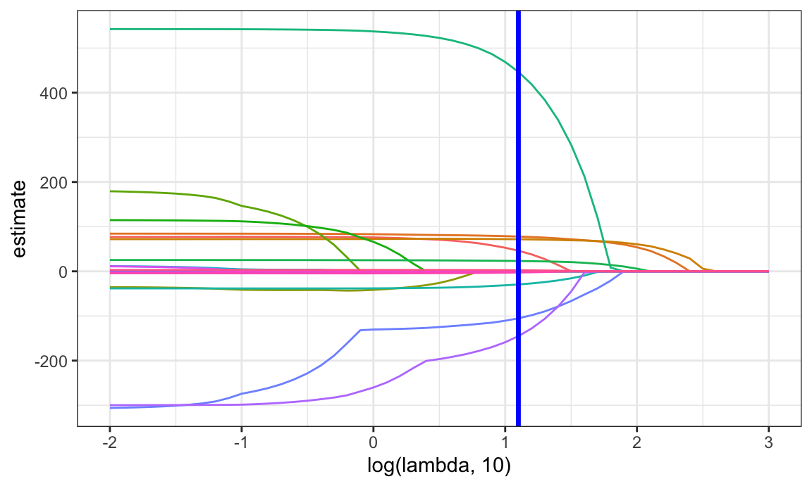
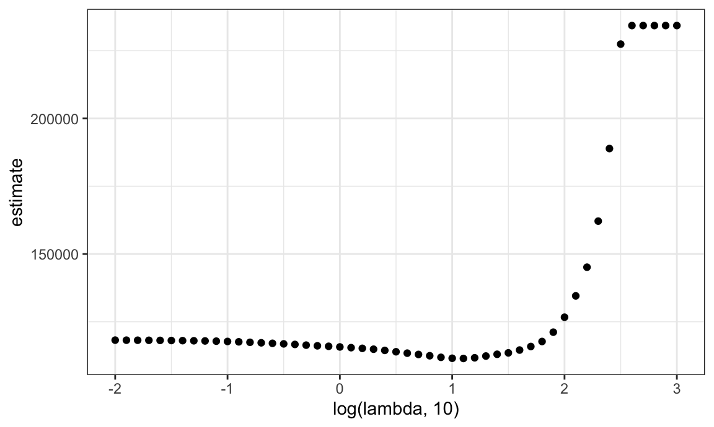
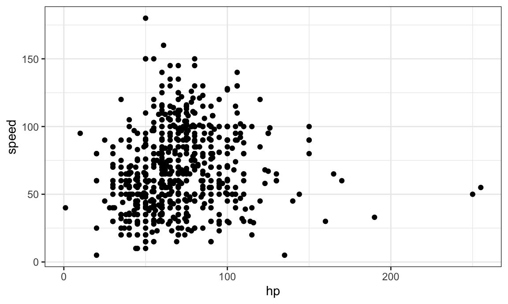
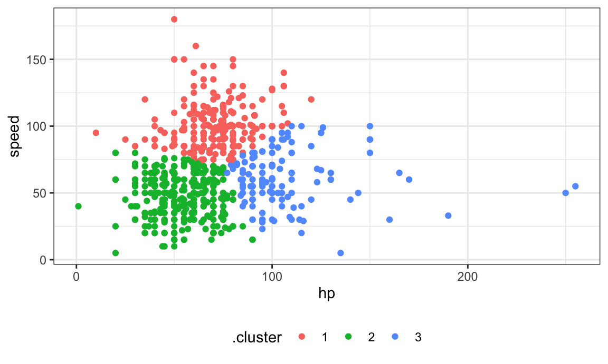
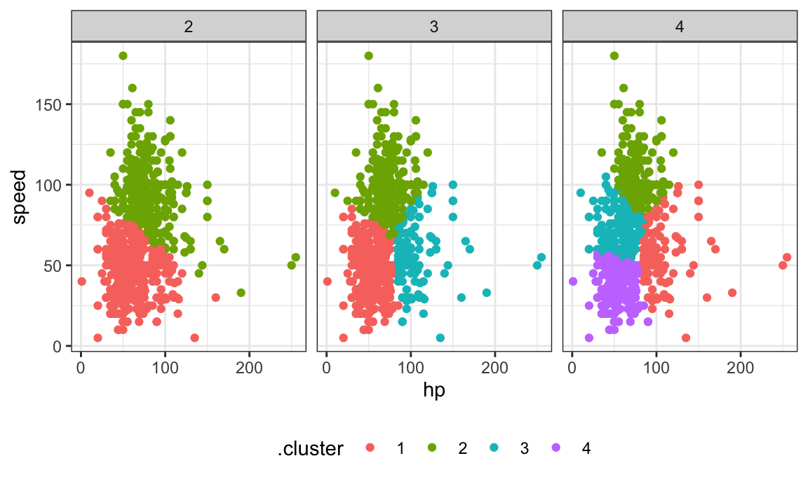
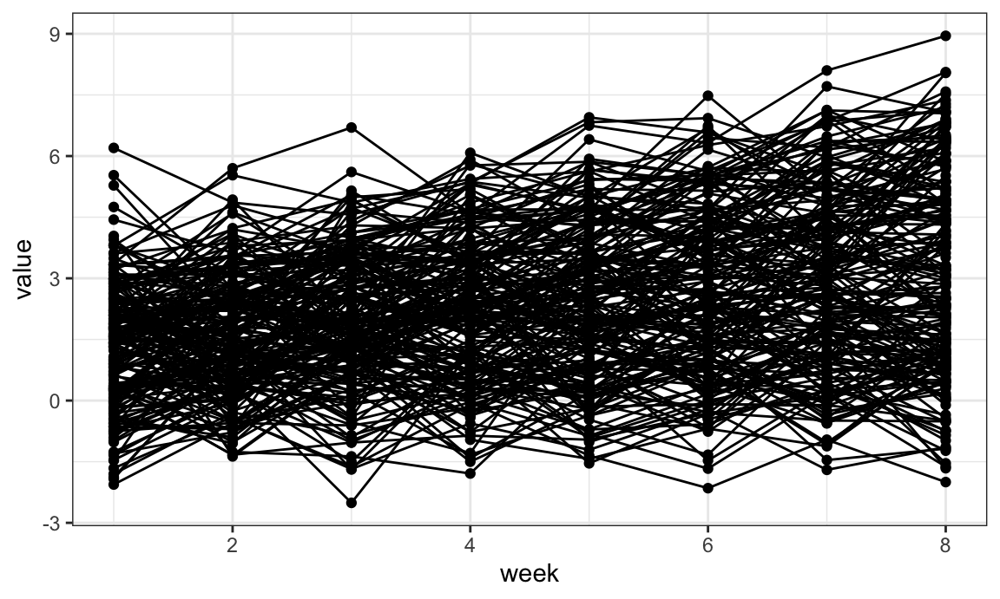
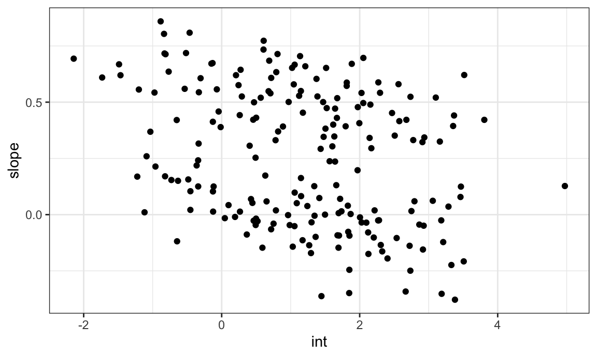
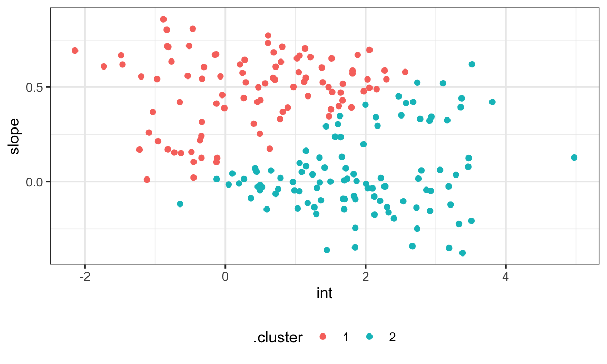
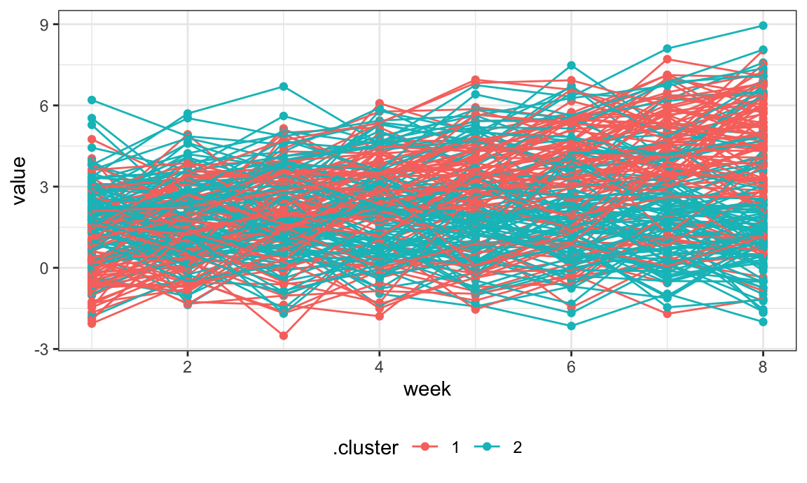

Statistical learning methods – both supervised and unsupervised – provide techniques for gaining insights from data. These methods have various goals, including prediction, pattern recognition, and classification; they also vary in complexity and interpretability. This lecture is intended to provide a very broad overview of two methods: lasso and k-means clustering.
The slack channel for extra topics is here.
## ── Attaching packages ─────────────────────────────────────────────────────── tidyverse 1.2.1 ──## ✔ ggplot2 3.2.0 ✔ purrr 0.3.3
## ✔ tibble 2.1.3 ✔ dplyr 0.8.3
## ✔ tidyr 1.0.0 ✔ stringr 1.4.0
## ✔ readr 1.3.1 ✔ forcats 0.4.0## ── Conflicts ────────────────────────────────────────────────────────── tidyverse_conflicts() ──
## ✖ dplyr::filter() masks stats::filter()
## ✖ dplyr::lag() masks stats::lag()As always, I’ll work on today’s example in a GitHub repo + local directory / R Project. This zip file has a couple of datasets we’ll look at.
library(tidyverse)
library(glmnet)
## Loading required package: Matrix
##
## Attaching package: 'Matrix'
## The following objects are masked from 'package:tidyr':
##
## expand, pack, unpack
## Loaded glmnet 3.0-1
set.seed(11)To illustrat the lasso, we’ll data from a study of factors that affect birthweight. The code chunk below loads and cleans these data, converts to factors where appropriate, and takes a sample of size 200 from the result.
bwt_df =
read_csv("./data/birthweight.csv") %>%
janitor::clean_names() %>%
mutate(
babysex = as.factor(babysex),
babysex = fct_recode(babysex, "male" = "1", "female" = "2"),
frace = as.factor(frace),
frace = fct_recode(frace, "white" = "1", "black" = "2", "asian" = "3",
"puerto rican" = "4", "other" = "8"),
malform = as.logical(malform),
mrace = as.factor(mrace),
mrace = fct_recode(mrace, "white" = "1", "black" = "2", "asian" = "3",
"puerto rican" = "4")) %>%
sample_n(200)
## Parsed with column specification:
## cols(
## .default = col_double()
## )
## See spec(...) for full column specifications.To fit a lasso model, we’ll use glmnet. This package is widely used and broadly useful, but predates the tidyverse by a long time. The interface asks for an outcome vector y and a matrix of predictors X, which are created next. To create a predictor matrix that includes relevant dummy variables based on factors, we’re using model.matrix and excluding the intercept
x = model.matrix(bwt ~ ., bwt_df)[,-1]
y = bwt_df$bwtWe fit the lasso model for each tuning parameter in a pre-defined grid lambda, and then compare the fits using cross validation. I chose this grid using the trusty “try things until it looks right” method; glmnet will pick something reasonable by default if you prefer that.
lambda = 10^(seq(3, -2, -0.1))
lasso_fit =
glmnet(x, y, lambda = lambda)
lasso_cv =
cv.glmnet(x, y, lambda = lambda)
lambda_opt = lasso_cv$lambda.minThe plot below shows coefficient estimates corresponding to a subset of the predictors in the dataset – these are predictors that have non-zero coefficients for at least one tuning parameter value in the pre-defined grid. As lambda increases, the coefficient values are shrunk to zero and the model becomes more sparse. The optimal tuning parameter, determined using cross validation, is shown by a vertical blue line.
broom::tidy(lasso_fit) %>%
select(term, lambda, estimate) %>%
complete(term, lambda, fill = list(estimate = 0) ) %>%
filter(term != "(Intercept)") %>%
ggplot(aes(x = log(lambda, 10), y = estimate, group = term, color = term)) +
geom_path() +
geom_vline(xintercept = log(lambda_opt, 10), color = "blue", size = 1.2) +
theme(legend.position = "none")
The next plot shows the CV curve itself. This is relatively shallow – having nothing at all in your model isn’t great, but you can get reasonable predictions from models that have “too many” predictors.
broom::tidy(lasso_cv) %>%
ggplot(aes(x = log(lambda, 10), y = estimate)) +
geom_point() 
The coefficients from the optimal model are shown below.
lasso_fit =
glmnet(x, y, lambda = lambda_opt)
lasso_fit %>% broom::tidy()
## # A tibble: 12 x 5
## term step estimate lambda dev.ratio
## <chr> <dbl> <dbl> <dbl> <dbl>
## 1 (Intercept) 1 -3659. 12.6 0.627
## 2 babysexfemale 1 46.2 12.6 0.627
## 3 bhead 1 77.9 12.6 0.627
## 4 blength 1 71.8 12.6 0.627
## 5 fincome 1 0.252 12.6 0.627
## 6 gaweeks 1 23.1 12.6 0.627
## 7 malformTRUE 1 447. 12.6 0.627
## 8 menarche 1 -29.4 12.6 0.627
## 9 mraceblack 1 -105. 12.6 0.627
## 10 mracepuerto rican 1 -145. 12.6 0.627
## 11 smoken 1 -2.62 12.6 0.627
## 12 wtgain 1 2.32 12.6 0.627To be clear, these don’t come with p-values and it’s really challenging to do inference. These are also different from a usual OLS fit for a multiple linear regression model that uses the same predictors: the lasso penalty affects these even if they’re retained by the model.
A final point is that on the full dataset, lasso doesn’t do you much good. With ~4000 datapoints, the relatively few coefficients are estimated well enough that penalization doesn’t make much of a difference in this example.
For ther first clustering example, we’ll use a dataset containing information about pokemon. The full dataset contains several variables (including some that aren’t numeric, which is a challenge for clustering we won’t address). To make results easy to visualize, we look only at hp and speed; a scatterplot is below.
poke_df =
read_csv("./data/pokemon.csv") %>%
janitor::clean_names() %>%
select(hp, speed)
## Parsed with column specification:
## cols(
## `#` = col_double(),
## Name = col_character(),
## `Type 1` = col_character(),
## `Type 2` = col_character(),
## Total = col_double(),
## HP = col_double(),
## Attack = col_double(),
## Defense = col_double(),
## `Sp. Atk` = col_double(),
## `Sp. Def` = col_double(),
## Speed = col_double(),
## Generation = col_double(),
## Legendary = col_logical()
## )
poke_df %>%
ggplot(aes(x = hp, y = speed)) +
geom_point()
K-means clustering is established enough that it’s implemented in the base R stats package in the kmeans function. This also has a bit of an outdated interface, but there you go. The code chunk below fits the k-means algorithm with three clusters to the data shown above.
kmeans_fit =
kmeans(x = poke_df, centers = 3)More recent tools allow interactions with the kmeans output. In particular, we’ll use broom::augment to add cluster assignments to the data, and plot the results.
poke_df =
broom::augment(kmeans_fit, poke_df)
poke_df %>%
ggplot(aes(x = hp, y = speed, color = .cluster)) +
geom_point()
Clusters broadly interpretable, but this still doesn’t come with inference. Also, at boundaries between clusters, the distinctions can seem a bit … arbitrary.
The code chunk below maps across a few choices for the number of clusters, and then plots the results.
clusts =
tibble(k = 2:4) %>%
mutate(
km_fit = map(k, ~kmeans(poke_df, .x)),
augmented = map(km_fit, ~broom::augment(.x, poke_df))
)
clusts %>%
select(-km_fit) %>%
unnest(augmented) %>%
ggplot(aes(hp, speed, color = .cluster)) +
geom_point(aes(color = .cluster)) +
facet_grid(~k)
There are metrics that can suggest which of these is the better choice, but we won’t get into that.
A second clustering example uses longitudinally observed data. The process we’ll focus on is:
Below we import and plot the trajectory data.
traj_data =
read_csv("./data/trajectories.csv")
## Parsed with column specification:
## cols(
## subj = col_double(),
## week = col_double(),
## value = col_double()
## )
traj_data %>%
ggplot(aes(x = week, y = value, group = subj)) +
geom_point() +
geom_path()
Next we’ll do some data manipulation. These steps compute the SLRs, extract estimates, and format the data for k-means clustering.
int_slope_df =
traj_data %>%
nest(data = week:value) %>%
mutate(
models = map(data, ~lm(value ~ week, data = .x)),
result = map(models, broom::tidy)
) %>%
select(subj, result) %>%
unnest(result) %>%
select(subj, term, estimate) %>%
pivot_wider(
names_from = term,
values_from = estimate
) %>%
rename(int = "(Intercept)", slope = week)A plot of the intercepts and slopes are below. There does seem to be some structure, and we’ll use k-means clustering to try to make that concrete.
int_slope_df %>%
ggplot(aes(x = int, y = slope)) +
geom_point()
km_fit =
kmeans(
x = int_slope_df %>% select(-subj) %>% scale,
centers = 2)
int_slope_df =
broom::augment(km_fit, int_slope_df)The plot below shows the results of k-means based on the intercepts and slopes. This is … not bad, but honestly maybe not what I’d hoped for.
int_slope_df %>%
ggplot(aes(x = int, y = slope, color = .cluster)) +
geom_point()
Finally, we’ll add the cluster assignments to the original trajectory data and plot based on this. Again, the cluster assignments are okay but maybe not great.
left_join(traj_data, int_slope_df) %>%
ggplot(aes(x = week, y = value, group = subj, color = .cluster)) +
geom_point() +
geom_path()
## Joining, by = "subj"
This example is very much related to “trajectory analysis”, which has become pretty popular recently (maybe because PROC TRAJ exists in SAS …). The basic idea is to use tools from longitudinal data analysis to estimate trajectories underlying data – mixed models rather than SLRs. The subject-level estimates (random effects) are then clustered; cluster means are hopefully interpretable, and cluster assignments are thought to be meaningful. In many cases, though, the distinction between groups is fairly arbitrary.
The code that I produced working examples in lecture is here.